- 2/23
- 定期維修的告知（2/25 AM0:00實施）
非常感謝您的使用。
這裡是「Fate/Grand Order」營運團隊。
將於下記的期間實施「Fate/Grand Order」的定期維修。
維修中無法遊玩「Fate/Grand Order」。
在維修開始前，請結束關卡及戰鬥。
※若任務及戰鬥進行中開始維修，或不正常結束的話，會有無法領取報酬的情況。
■時間
2016年2月25日(四) AM0:00～AM6:00（預定）
※維修結束的預定時間可能會有前後差異。
▼應用程式的更新
・維修結束後，請進行應用程式的更新。（Android、iOS）
最新的版本如下。
Android：【Ver.1.7.0】
iOS：【Ver.1.7.0】
※請務必在GooglePlay、AppStore更新。
請注意不要解除安裝。
※在GooglePlay沒顯示更新鍵的話，請執行清除GooglePlay的快取。
1.從主畫面點選單鍵，選擇「設定」
2.「應用程式」→選擇「Google Play商店」
3.選擇「清除快取」
注意）請勿點選「解除安裝更新」。
※選單的顯現可能因客戶端而讓操作上有些微差異。
▼【重要】更新之際的注意事項
有著更新程式會讓Servant及概念禮裝的鎖定被解除情況的問題發生。
如果問題發生，麻煩您在程式更新後，重新執行鎖定的設定。
▼遊戲的更新・追加
1.新規活動「空之境界/the Garden of Order」的実施
2.聖晶石召喚（期間限定）的更新
3.新Servant及新規概念禮裝的追加
4.一部份Servant的絆等級達成開放的語音追加
※對象Servant如下。
・ 絆Lv.5
絆Lv.5
5.在我的房間(MyRoom)可以任意選擇最愛Servant(お気に入りサーヴァント)的靈基再臨階段(外觀)的功能追加。
6.在幕間物語的記錄，可以重播每位Servant的靈基再臨演出追加。
7.在戰鬥追加就算高速模式中也只讓寶具等速播放的功能追加。
8.在Master裝備及Servant詳細追加可以確認技能冷卻時間的顯示。追加
9.TIPS一部份追加
10.從一部份概念禮裝的保有技能，刪除已結束活動有關的文字
※對象概念禮裝如下。
・ 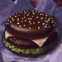
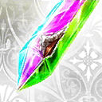
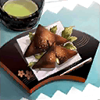
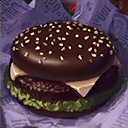
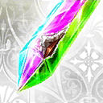
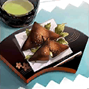
・
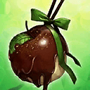
・
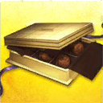
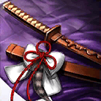
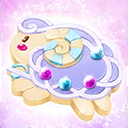
・
 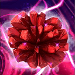
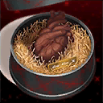
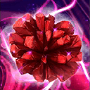
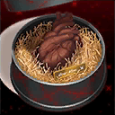
・
▼問題的修正
1.在隊伍編成組成畫面中一部份Servant不正常顯示的問題修正
※對象Servant如下。
・
2.一部份Servant的語音列表不正常顯示的問題修正
※對象Servant如下。
・


3.有著1個概念禮裝能裝備在同一隊伍內的複數成員情況的問題修正
4.在戰鬥中賦予Critical星星時音效不會響情況的問題修正
5.一部份概念禮裝的技能效果一部份沒有正常動作的問題修正
※對象概念禮裝如下。
・
6.對發動迴避技能的敵人以無敵貫通狀態進行攻擊，發動次數不會減少的問題修正
7.一部份Servant的技能在敵人全滅後也會發生技能演出的問題修正
※對象Servant如下。
・ 支援砲撃 EX
支援砲撃 EX
8.一部分文字的錯字漏字修正
▼遊戲的修改
1.對Master設定NG字眼
2.在MyRoom，喜愛Servant的語音播放中，能以觸擊取消語音
3.Servanto詳細中，語音列表顯示中BGM音量自動降低
4.在マテリアル、幕間物語的記録排列順序變更
5.達文西工房項目的排列順序變更
6.一部份Servant的技能圖示更新
※對象Servant如下。
・ 麗しの風貌 C
麗しの風貌 C
7.一部份Servant在高速模式中的寶具中語音調整
※對象Servant如下。
・

8.各種UI及文字的改善
對上述的問題修正感到抱歉，會向對象的玩家做出以下對應。
【對象】
於2/24(三) 23:59前有遊玩過「Fate/Grand Order」的所有玩家
【對應內容】
・聖晶石6個
【配布方法】
在禮物箱配布
【配布期間】
2016年2月26日(五)AM3:00～2016年7月31日(日)22:59
非常抱歉麻煩到正在使用的玩家。